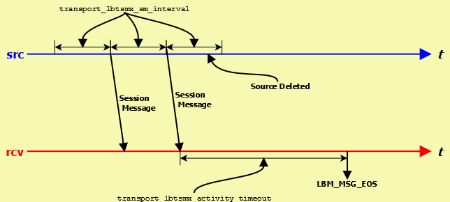

The image below illustrates the timing of an LBT-SMX transport session.

The Source Session Message mechanism enables the receiver to detect when a source goes away and works similarly to LBT-RU. It operates independently of message writes/reads in the Shared Memory Area.
LBT-SMX Transport Session Management <-
When a source is created, the application can explicitly map it to a transport session by setting the transport_lbtsmx_id (source) option. If a previous source was created on the same context with the same ID number, this new source will be mapped to the same transport session. Note that ID numbers can be re-used by different contexts on the same host. The resulting transport sessions will be separate, independent, and non-interfering.
Alternatively, if the application does not explicitly specify a source ID, UM will implicitly assign the new source to a pool of transport sessions defined when the context was created. The pool is defined as a range of ID numbers specified by the options transport_lbtsmx_id_low (context) and transport_lbtsmx_id_high (context). The numeric range defines the number of transport sessions in the pool.
When a new source is created and the source port is not explicitly defined, UM will check to see how many transport sessions are currently active from the pool within the context. If it is less than the configured range of IDs then UM will use the next ID in the range transport_lbtsmx_id_low (context) to transport_lbtsmx_id_high (context). However, if the context already has activated all transport sessions in the pool, then the new topic is mapped to one of the existing transport sessions, in round-robin fashion.
Reference <-
transport_lbtsmx_activity_timeout (receiver) <-
- The maximum period of inactivity (lack of updates to the source's shared activity counter) from an SMX source before UM delivers an EOS event for all topics using the transport session.
- You should configure this option to a value greater than the source's transport_lbtsmx_sm_interval so receivers do not erroneously report a source as inactive.
| Scope: | receiver |
| Type: | lbm_ulong_t |
| Units: | milliseconds |
| Default value: | 60,000 (60 seconds) |
| When to Set: | Can only be set during object initialization. |
| Version: | This option was implemented in UM 6.1 |
transport_lbtsmx_datagram_max_size (source) <-
- The maximum datagram size that can be sent for an LBT-SMX transport session.
- While SMX does not use UDP datagrams, this option limits the size of the UM message which is given to the underlying transport type, including all UM headers and overhead. This value includes 16 bytes of header information per message, plus an additional 24 bytes of reserved space for compatibility with other egress transports when re-sending SMX messages through a UM Dynamic Router. Therefore, the largest usable message size for the default setting of 8192 bytes would be 8176 bytes (8192 - 16 - 24). The minimum is 32 bytes. The maximum size is limited by available memory.
- This option imposes a hard limit on message size because the LBT-SMX transport does not support datagram fragmentation or reassembly. Unlike other transports that do support fragmentation, attempts to send messages larger than the datagram size configured by this option fail.
- The minimum value for this option is 32 bytes. Unlike other transports, there is no hard-coded maximum value; the maximum is limited only by the amount of memory available.
- Note: The source's configured transport_lbtsmx_transmission_window_size (source) must be at least twice as large as the source's configured transport_lbtsmx_datagram_max_size. If the transmission window has not been configured to be large enough to hold at least two maximum-sized SMX datagrams, then a warning will be issued and the source's transport_lbtsmx_transmission_window_size option will be automatically adjusted upwards to the nearest power-of-2 size in bytes that can fit at least two maximum-sized datagrams.
- See Message Fragmentation and Reassembly for more information.
- Informatica does not recommend setting datagram max size options to the network MTU. See Datagram Max Size and Network MTU.
- Warning
- When the DRO is in use, it is recommended that all UM applications and components (including the DRO and Persistent Store) share the same maximum datagram size setting. See Protocol Conversion.
- Users of kernel-bypass drivers should see Dynamic Fragmentation Reduction.
| Scope: | source |
| Type: | lbm_uint_t |
| Units: | bytes |
| Default value: | 8192 |
| When to Set: | Can only be set during object initialization. |
| Version: | This option was implemented in UM 6.1 |
transport_lbtsmx_id (source) <-
- The preferred Transport ID for a specific source's LBT-SMX session.
- To use this option, configure a non-zero value. For the default value of 0 (zero), the UM context selects the next available Transport ID in the Transport ID range of transport_lbtsmx_id_low (context) and transport_lbtsmx_id_high (context).
- See LBT-SMX Transport Session Management and Sources and LBT-SMX for more information.
| Scope: | source |
| Type: | lbm_uint16_t |
| Default value: | 0 (select next ID in range) |
| When to Set: | Can only be set during object initialization. |
| Version: | This option was implemented in UM 6.1 |
transport_lbtsmx_id_high (context) <-
- Highest transport ID in the range of available LBT-SMX Transport IDs.
- See LBT-SMX Transport Session Management and Sources and LBT-SMX for more information.
| Scope: | context |
| Type: | lbm_uint16_t |
| Default value: | 30,005 |
| When to Set: | Can only be set during object initialization. |
| Version: | This option was implemented in UM 6.1 |
transport_lbtsmx_id_low (context) <-
- Lowest transport ID in the range of available LBT-SMX Transport IDs.
- See LBT-SMX Transport Session Management and Sources and LBT-SMX for more information.
| Scope: | context |
| Type: | lbm_uint16_t |
| Default value: | 30,001 |
| When to Set: | Can only be set during object initialization. |
| Version: | This option was implemented in UM 6.1 |
transport_lbtsmx_maximum_receivers_per_transport (source) <-
- The maximum number of receiving contexts that can join an SMX transport session.
- Once a receiving context joins an SMX transport session, it can receive messages on multiple topics. Increasing this value increases the amount of shared memory allocated per transport session by a negligible amount.
| Scope: | source |
| Type: | lbm_ushort_t |
| Default value: | 64 |
| When to Set: | Can only be set during object initialization. |
| Version: | This option was implemented in UM 6.1 |
transport_lbtsmx_message_statistics_enabled (context) <-
- Controls whether or not UM records LBT-SMX transport statistics
- Enabling statistics gives better visibility of application behavior, at the expense of a small but measurable amount of latency.
| Scope: | context |
| Type: | int |
| Default value: | 0 |
| When to Set: | Can only be set during object initialization. |
| Version: | This option was implemented in UM 6.1 |
| Value | Description |
| 1 | UM records source and receiver LBT-SMX transport statistics.
|
| 0 | UM does not record source and receiver LBT-SMX transport statistics. Default for all. |
transport_lbtsmx_sm_interval (source) <-
- Time period between updates to an LBT-SMX source's shared activity counter, which enables connected receivers to determine the source's liveness.
- You should configure this option to a value less than the receivers' corresponding transport_lbtsmx_activity_timeout (receiver) setting so receivers do not time out sources too early.
- Refer to Source Object for additional information.
| Scope: | source |
| Type: | lbm_ulong_t |
| Units: | milliseconds |
| Default value: | 10,000 (10 seconds) |
| When to Set: | Can only be set during object initialization. |
| Version: | This option was implemented in UM 6.1 |
transport_lbtsmx_transmission_window_size (source) <-
- Size of an LBT-SMX transport's shared memory area.
- Must be a power of two and be at least twice a large as the source's transport_lbtsmx_datagram_max_size (source). If you configure a value that is not a power of 2 or is less than twice the size of the maximum datagram size, UM issues a warning log message and automatically rounds up the value of this option to the next power of 2 window size that can fit at least two maximum-sized datagrams. The minimum value for this option is 64 bytes.
- Refer to Source Object for additional information.
| Scope: | source |
| Type: | size_t |
| Units: | bytes |
| Default value: | 131072 (128 KB) |
| When to Set: | Can only be set during object initialization. |
| Version: | This option was implemented in UM 6.1 |